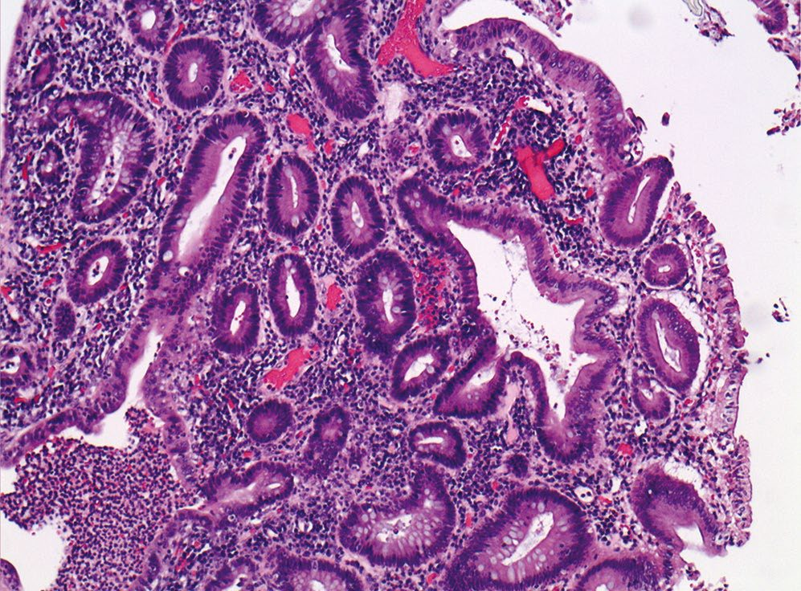
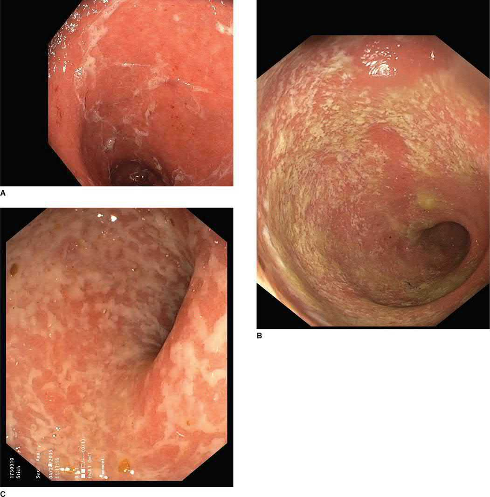
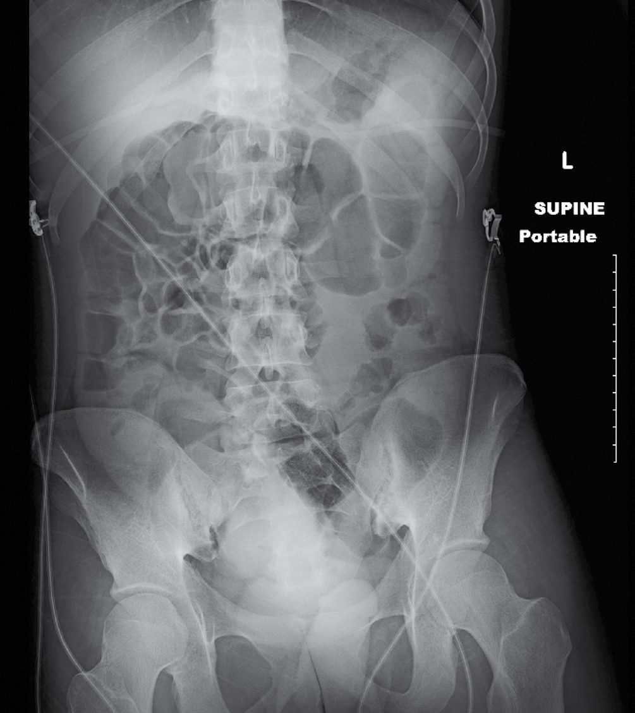
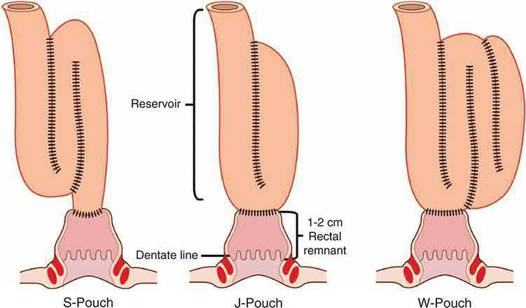

Ulcerative Colitis
Summary
- Ulcerative colitis (UC) is a chronic, relapsing-and-remitting inflammatory bowel disease confined to the large intestine, characterised by continuous mucosal inflammation that always involves the rectum and extends proximally to a variable degree [1].
- Around 5% of patients present with acute severe (fulminant) colitis, a medical and surgical emergency [1].
- Medical therapy aims for clinical and endoscopic remission; roughly 20% of patients require colectomy over their lifetime [1].
Definition
Ulcerative colitis is a chronic inflammatory bowel disease characterised by mucosal inflammation of the large bowel, always involving the rectum (proctitis) and extending to a variable degree of more proximal colon (colitis); when the entire colon and rectum are involved this is termed pancolitis [1].
Pathophysiology
- UC is a mucosal (not transmural) inflammatory process.
- Histological hallmarks include crypt atrophy and distortion, irregular mucosal villi, basal plasmacytosis and mucus depletion, though none is individually pathognomonic, diagnosis rests on clinical correlation, disease course and exclusion of infection [1].
- Pseudopolyposis occurs in almost a quarter of cases; stricturing is unusual (unlike Crohn's disease) and should prompt urgent evaluation for coexisting carcinoma [1].
- Half of patients with disease initially confined to the rectum/rectosigmoid go on to develop more proximal disease over time [1].
- Increased gut mucosal permeability develops early, with increased luminal antigen passage inducing a cell-mediated inflammatory response [1].

Clinical features
Symptoms depend on disease extent [1][3]:
- Proctitis: the commonest presentation; urgency and frequency due to rectal irritability, with bloody mucus mixed with loose stool (frank bloody diarrhoea is rare).
- Left-sided colitis (to the splenic flexure): rectal irritation plus extensive bloody mucus, often bloody diarrhoea, with mild systemic features.
- Pancolitis: diarrhoea predominates, with common systemic features (fever, malaise, anorexia, tachycardia), possible "backwash ileitis," anaemia, hypoalbuminaemia and hypokalaemia.
- Pain is unusual in UC generally, but abdominal pain, distension and impaired growth in children may occur with extensive disease.
Extraintestinal manifestations occur in around 15% (arthritis, asymmetrical large-joint polyarthropathy) and include sacroiliitis/ankylosing spondylitis (20 times more common than the general population, HLA-B27-associated), primary sclerosing cholangitis (which can progress to cirrhosis and is a risk factor for cholangiocarcinoma and colorectal neoplasia independent of colectomy), erythema nodosum, pyoderma gangrenosum, uveitis and episcleritis [1].
Etiology
- The precise aetiology is unknown but reflects genetic predisposition combined with environmental triggers, often an apparent acute gastrointestinal infection; peak diagnosis is in the late teens and twenties, though it may present in later life, and it is commonest in white populations [3].
- Incidence and prevalence of inflammatory bowel disease overall are highest in Europe and North America (around 3 per 1000), rising worldwide with improved hygiene, dietary change and industrialisation [1].
- Unlike Crohn's disease, smoking tends to suppress UC symptoms [2].
Diagnosis
- Basic bloods show raised WCC/CRP and low Hb/albumin during flares.
- Stool should be sent for microbiology (particularly Campylobacter, which can closely mimic acute severe UC) and Clostridioides difficile toxin; cytomegalovirus should be considered in immunocompromised patients, as it can precipitate fulminant colitis [1].
- Rigid/flexible sigmoidoscopy shows hyperaemic, friable mucosa with mucopurulent exudate; colonoscopy with biopsy establishes extent, distinguishes UC from Crohn's colitis, monitors treatment response, and screens longstanding disease for dysplasia, though colonoscopy is contraindicated in severe acute colitis due to perforation risk [1][3].
- Plain abdominal radiograph can show mucosal "thumbprinting" and is valuable for detecting toxic megacolon in the acute setting; CT can show colonic wall thickening and mesenteric inflammatory stranding [1].

Scoring and Severity
The Truelove and Witts criteria classify severity by stool frequency and systemic signs [1]:
- Mild: <4 stools/day, with or without blood, no systemic toxicity.
- Moderate: >4 stools/day with minimal systemic illness, possible mild anaemia and abdominal pain, raised ESR/CRP.
- Severe: >6 bloody stools/day with systemic illness, fever, tachycardia, anaemia, raised inflammatory markers, often hypoalbuminaemia.
- Fulminant: >10 bowel movements/day, fever, tachycardia, continuous bleeding, anaemia, hypoalbuminaemia, abdominal tenderness/distension, transfusion requirement, and in the worst cases progressive toxic megacolon, an indication for emergency surgery.

- The Mayo score combines stool frequency, rectal bleeding, endoscopic findings on flexible sigmoidoscopy and global physician assessment (each scored 0–3) to grade disease activity and monitor treatment response [1].
- Toxic dilatation/megacolon is defined radiologically as a colonic diameter >5.5–6 cm [1][5].
- Cancer risk rises with disease duration: approximately 1% at 10 years, 10–15% at 20 years, and 20% at 30 years from diagnosis, so patients with pancolitis >10 years' duration enter endoscopic surveillance programmes [1].
Treatment and Management
Care is delivered by a multidisciplinary IBD team (gastroenterology, colorectal surgery, IBD nursing, stoma therapy, radiology, pathology, dietetics) [1]. First-line treatment is 5-aminosalicylic acid (5-ASA), topical or systemic, useful in proctitis and maintenance; corticosteroids (topical or systemic) provide prompt symptom relief for flares but are not for long-term maintenance; azathioprine/6-mercaptopurine and ciclosporin provide steroid-sparing maintenance (with TPMT testing recommended before thiopurines, as ~10% have deficient activity); anti-TNFα antibodies (infliximab, adalimumab), ustekinumab, vedolizumab/etrolizumab, tofacitinib and ozanimod are used for moderate-to-severe or refractory disease [1][3].
Acute severe colitis requires admission, regular vital-sign/abdominal review, stool charting, and IV hydrocortisone as first-line; IV ciclosporin or anti-TNFα rescue therapy is considered if there is no rapid improvement, with clinical deterioration mandating urgent colectomy [1][5]. Correction of anaemia, electrolyte derangement and nutritional support (often parenteral) is essential; steroids may mask signs of impending perforation [1].
Indications for surgery: severe/fulminating disease unresponsive to medical therapy; chronic disease with anaemia, frequent stools, urgency and tenesmus; steroid dependency or intolerable side effects; growth retardation in children; high-grade dysplasia or carcinoma; associated sclerosing cholangitis; extraintestinal manifestations; and rarely severe haemorrhage or obstructive stenosis [1].
Surgeries
- Emergency subtotal colectomy and end-ileostomy: the safest procedure in acute severe colitis or in malnourished/high-dose-steroid patients, leaving the rectosigmoid remnant as a mucous fistula or closed rectal stump; avoids pelvic dissection in an unwell patient and allows histology to distinguish UC from Crohn's disease; restorative surgery is deferred until recovery [1].
- Restorative proctocolectomy with ileal pouch–anal anastomosis (IPAA): the standard elective restorative operation, most often a "J" pouch, usually with a covering loop ileostomy in a two- or three-stage approach [1]. Indicated for UC not responding to medical management [3].

- Panproctocolectomy and permanent end-ileostomy: removes all disease and cancer risk; indicated when restorative surgery is unsuitable (poor sphincter function, comorbidity, patient preference) [1].
- Subtotal colectomy and ileorectal anastomosis: an option avoiding pelvic surgery, requiring ongoing rectal surveillance.
- Segmental colectomy is not recommended for UC due to a high recurrence rate in the remaining colon [1].
Complications
- Toxic megacolon and colonic perforation (mortality ~40%) are the most serious acute complications; severe haemorrhage is uncommon (1–2%) but may need urgent surgery [1].
- Postoperative pouch complications include pelvic sepsis/anastomotic leak, stenosis, pouchitis (inflammation causing pain, frequency and bleeding, treated with antibiotics/steroids/probiotics) and poor function/anterior-resection-type syndrome [1][3].
- Pouchitis affects 30–55% of ileoanal pouch patients over time, presenting with diarrhoea, hematochezia, pain, fever and malaise; differential diagnosis includes infection and undiagnosed Crohn's disease [6].
- Long-standing pancolitis carries increased colorectal cancer risk, particularly with coexisting primary sclerosing cholangitis [1].
Prognosis
UC follows a chronic relapsing-remitting course; early relapse and persistent disease within the first two years predict a more severe course [1]. Intensive medical treatment of acute severe colitis achieves remission in around 70% of episodes, with the remainder requiring urgent surgery [1]. The overall lifetime risk of colectomy in UC is approximately 20% [1].
References
- Bailey & Love's Short Practice of Surgery, 28th ed., Ch. 75 Inflammatory bowel disease
- Sabiston Textbook of Surgery, 22nd ed., Ch. 95 Colon and Rectum
- Oxford Handbook of Clinical Surgery, 5th ed., Ch. 12 Colorectal surgery
- Maingot's Abdominal Operations, 13th ed., Ch. 46
- Oxford Handbook of Clinical Surgery, 5th ed., Ch. 26 Emergency surgery topics
- Schwartz's Principles of Surgery: ABSITE and Board Review, Ch. 29